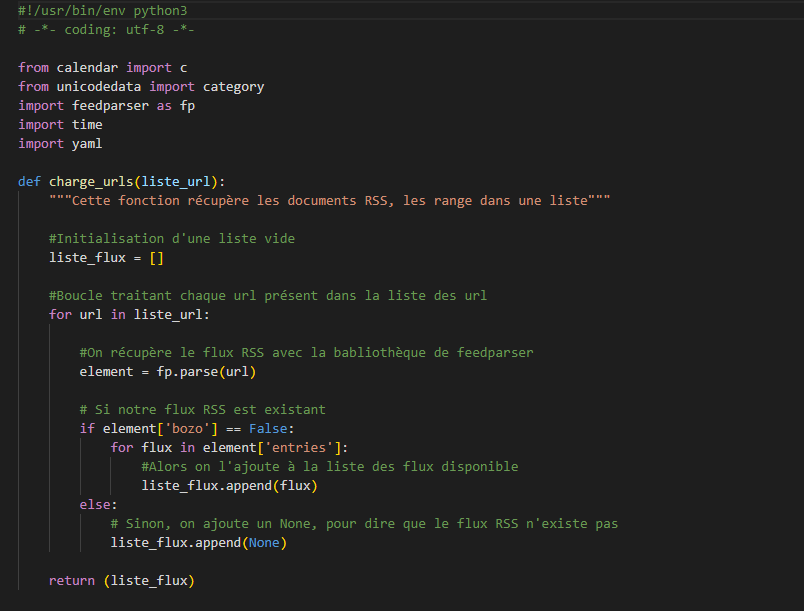
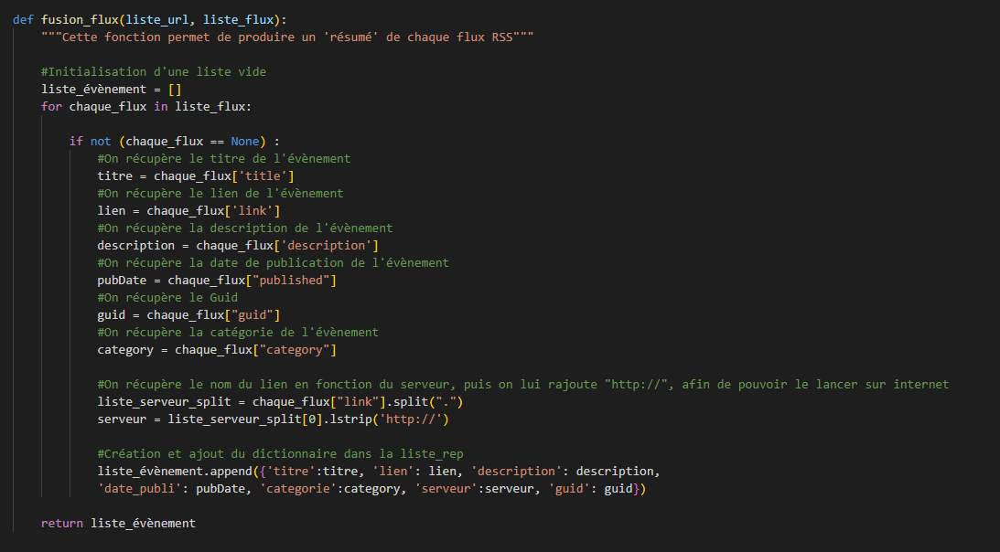
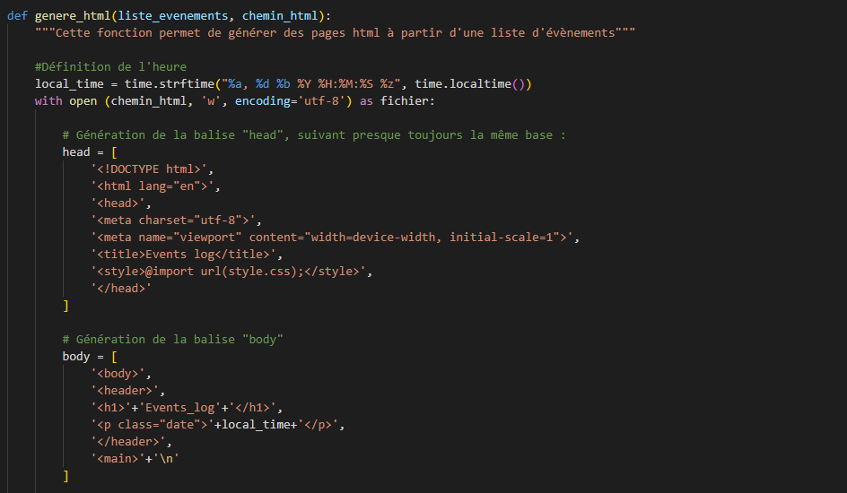
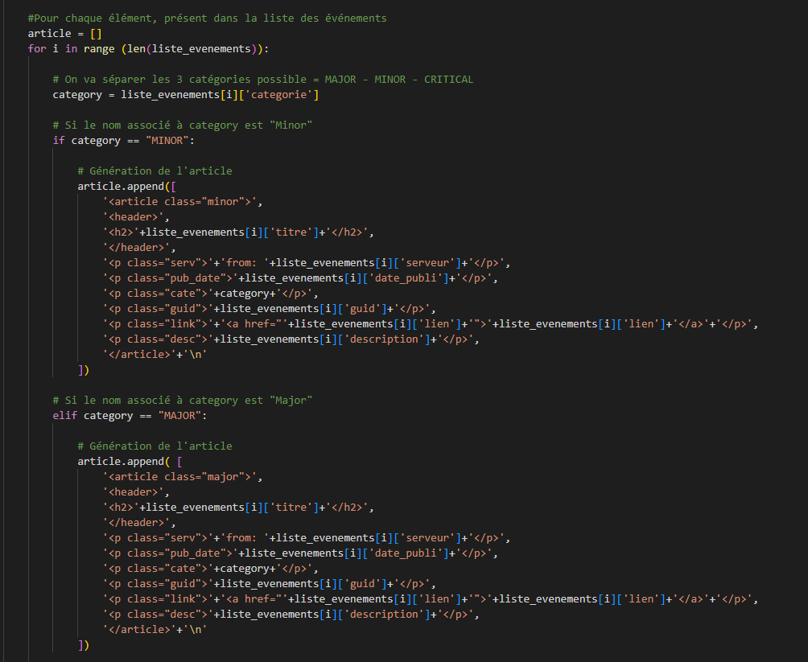
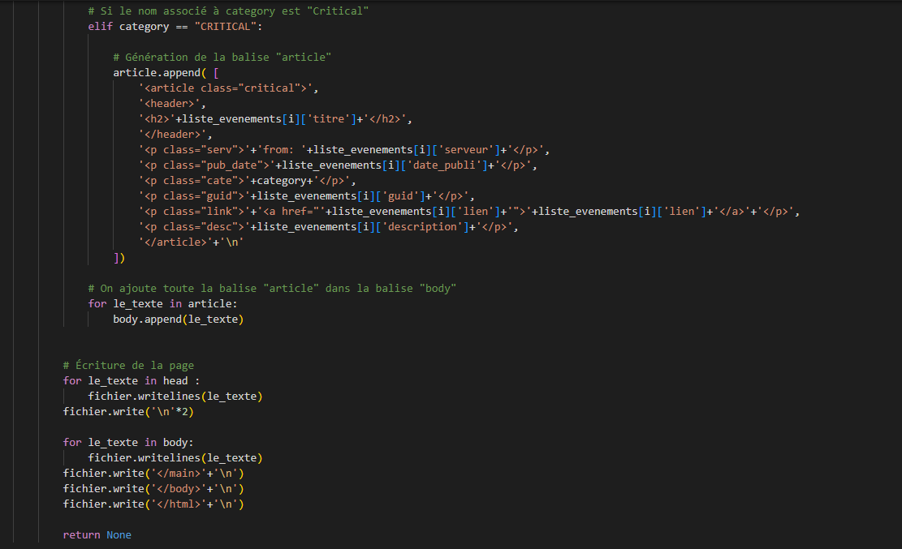
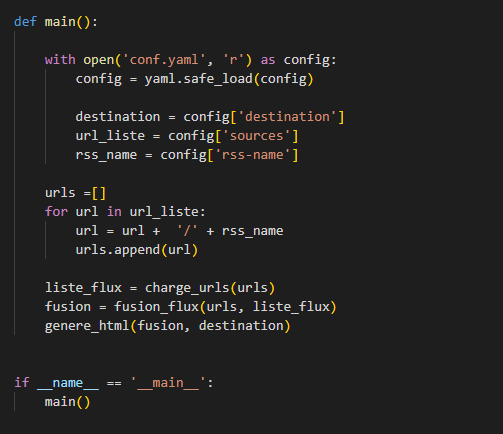

Import part:
The lines of code in this part will allow us to import our libraries for the execution of our
execution of our program.
Calendar: this module allows us to display a calendar or provides us with useful
functions related to the calendar.
Unicodedata : this module gives access to the Unicode Character Database (UCD)
which defines the character properties for all Unicode characters.
Feedparser : this module allows us to download and analyze syndicated feeds.
Time : this module provides different functions related to time.
Yaml: this module is commonly used for configuration files, but it is also used for data
also used for data storage.
Function charge_urls(liste_url) :
This function retrieves the RSS documents, arranges them in a list. If a URL is
inaccessible, we put the value "None" in the list and return the list.
We started the code with an initialization of an empty list that will allow us to
to host the rss feeds. We continue with a loop that processes each url in the
the list of url. The rss feeds are retrieved using the feedparser library. For the study of
our feed, we will study the case of "bozo". If this element contained in a feed is
equal to "False", we add the feed to the list. If it is not the case, we add None,
to say that the stream does not exist.
Part fusion_flux(liste_url, liste_flux) :
This function takes as parameters the same list of URLs as the
function and also a list of RSS documents like the one produced by the
function load_urls(list_url). It outputs a list where each element is a
dictionary describing an event from one of the sites. The keys of this dictionary
are: title, category, server, date_published, link, description.
The beginning of the function results in an initialization of an empty list. For all the streams
present in the list of feeds and which are different from "None", we create variables
title, link, description, pudDate, guid and category. These variables retrieve the title, the link, the description, the date of
description, the publication date and the category of the event. Then, we
retrieve the name of the link according to the server and we add " http:// " because we want to launch it on the
want to launch it on the internet. We then create a dictionary in our list
initialized at the beginning of the function. The information stored inside is the title, the link, the description
description, the publication date, the category, the server and the handle.
Part genere_html(liste_evenements, chemin_html) :
This function takes as parameters a list of events structured in the same way as the one produced by
produced by the merge_flux function in step 2, the path of the file that will contain the
generated HTML page.
To start this function, we start by setting the time with a variable
local_time. Then we start the generation of our html site. The head tag
tag will be generated first, the body tag second and the articles last. Concerning the
articles, we will search in the list of events, the categories to separate them in
3: MAJOR, MINOR and CRITICAL. The creation of articles is done according to the name of the
category: if the name associated with category is "Minor", we generate an article. The same goes for
MAJOR and CRITICAL : if the name associated with category is " Major ", we generate an article and
if the name associated with category is "CRITICAL", we generate an article. In the rest of the program
program, we add the article tag to the body tag. Finally, we use
.writelines and .write to write in the page.
Part main :
This part will allow to open the conf.yaml file and execute the functions
previously explained.
The main part will allow us to open the yaml file, our configuration file.
We open our file with " with open ", it will be assigned the variable config.
In a second step, we will retrieve the destination of the streams, their sources and the name
of the stream. Then we create an empty list called url. For each url in the list, we add the url + '/' + the name of the stream.
list, we add the url + '/' + the name of the stream. Finally, we call the 3 functions which are
liste_flux, fusion_flux and genere_html to make the whole program work.
To design this python program, many tests and errors were made. The elaboration of the
code was quite complicated but I knew how to adapt and with the time given for this SAE, the
program could be completed. Some negative points can be noted like
the sorting chrono which does not work or the guid appearing twice in the HTML site.
Some
possible improvements are strongly possible, indeed I made my task more complex in my programming
in my programming of aggreg.py, the code could be written more simply and in a
in a more comprehensible way.
See code :







 Debian
Debian Scripting
Scripting Python
Python